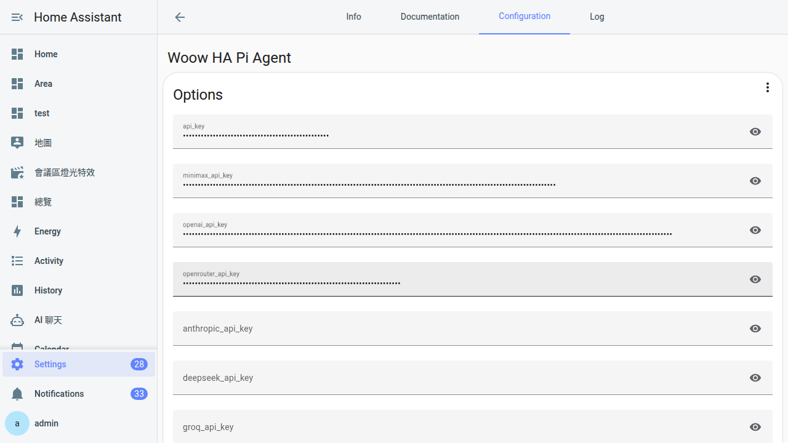

設定參數速查
Pi Agent 從 v0.13.0 之後，Add-on 的「Configuration」分頁只剩下 4 個開關。這附錄一次講清楚每個開關的意義、預設值、合法值、什麼時候該動、什麼時候不要動。日常你其實不會來這頁——但需要來的時候，這裡就是速查表。
什麼時候會來翻這頁
平常你根本不需要打開 Pi Agent 的 Add-on 設定分頁。裝好之後（第 2 章）、金鑰貼進去（第 6 章），就直接從側邊欄用起來，一年不用碰 Configuration。
但下面這幾個情境會逼你打開它：
- Log 找 bug：想看更詳細的訊息、把
log_level調到debug。 - 時區跑掉：發現 Logs 的時間比實際早 8 小時、想把
timezone設成Asia/Taipei。 - 影片管線壞了：Chromium 或 venv 環境爛掉，要重灌 video-tools（第 18 章會解釋為什麼）。
- 環境變數逃生口：家裡走公司 proxy、或想改 Chromium 下載鏡像，得塞
env_vars。
四個開關對應這四種情境，一個 section 講一個，格式一致：作用 / 預設 / 合法值 / 什麼時候動 / 踩雷 / 範例。

最重要的觀念：所有 API 金鑰都不在這裡
這是升級到 v0.13.0 之後最容易踩的坑。Add-on 的 Configuration 分頁沒有任何 API key 欄位——所有 provider（GLM、OpenAI、Anthropic、DeepSeek、Groq、MiniMax、OpenRouter）的金鑰全部搬到 pi-web 內建的 Models 面板裡管理（第 6 章教過），詳細版本變更記在第 21 章。
這附錄講的四個選項是「Add-on 容器層」的設定——影響的是整個 add-on 怎麼跑、log 長怎樣、時區怎麼算、影片工具要不要重灌，跟「哪家 AI、用哪把 key」完全兩碼事。
| 你想改的東西 | 去哪裡改 |
|---|---|
| 加一家 AI provider、換 API 金鑰、改 baseUrl | pi-web → Models 面板（第 6 章） |
| 裝 skill、刪 skill | pi-web → Skills 面板（第 14 章） |
| Add-on log 詳細度、時區、重灌 video-tools、環境變數 | 本附錄講的 Add-on Configuration 分頁 |
選項 1：log_level——訊息詳細度
| 項目 | 內容 |
|---|---|
| 作用 | 控制 Add-on 在 Logs 分頁印出多少細節，也影響 pi-web 後端的 log 冗長度。 |
| 合法值 | error、warn、info、debug（由少到多） |
| 預設 | info |
| 是否需重啟 | 是。改完儲存後 add-on 會自動重啟套用。 |
什麼時候該調
- 日常：保持
info，該有的訊息都在，也不會太吵。 - 找 bug：調
debug——每一次 HTTP 請求、每一個 skill 掃描、每一個 provider 呼叫都會印出來。抓完 bug 記得調回去。 - 只想看警告：
warn——只印 warning 以上，適合系統跑穩之後日常巡檢。 - 極簡：
error——真的只留錯誤。不建議長期用，因為 warning 常常是「快壞掉了」的預兆。
debug 開太久 log 檔會爆多——每分鐘可能幾千行。HA 的 log 是輪替的（超過大小會自動清），但如果你 SSH 進去主機直接看檔案，可能發現硬碟被吃掉幾百 MB。找完 bug 記得調回 info。範例
log_level: debug用途：專門開來找「為什麼影片管線失敗」，可以看到 Playwright 啟動每一步、ffmpeg 每一個參數。找完之後改回：
log_level: info選項 2：timezone——時區
| 項目 | 內容 |
|---|---|
| 作用 | 影響三件事：（1）Add-on log 的時間戳（2）Session 檔案與備份的日期命名（3）影片管線輸出的 SRT 字幕 cue timing 顯示。 |
| 合法值 | IANA 時區字串，例如 Asia/Taipei、Asia/Tokyo、America/New_York、Europe/London。 |
| 預設 | 空（等同 UTC） |
| 是否需重啟 | 是。改完儲存後 add-on 會自動重啟。 |
為什麼台灣使用者一定要設
不設的話 Logs 分頁時間會是 UTC，比台灣時間早 8 小時。你晚上 8 點按了個操作、去 Logs 找對應紀錄，會看到「中午 12 點發生」——很容易以為 log 掉了。設成 Asia/Taipei 就跟你腦袋裡的時間對得起來。
Session 檔案的日期也會受影響——不設時區的話，深夜 11 點開的 session 檔名日期可能已經跳到「隔天」（因為 UTC 已經過午夜），對照起來很混亂。
Taipei 而不是 Asia/Taipei 會 fallback 回 UTC，而且不會報錯——你以為設好了，其實沒生效。同理 +08:00、CST、GMT+8 這些寫法也不吃。標準寫法一律是 大洲/城市。常用 IANA 字串速查
| 地區 | IANA 寫法 |
|---|---|
| 台灣 | Asia/Taipei |
| 日本 | Asia/Tokyo |
| 香港 | Asia/Hong_Kong |
| 新加坡 | Asia/Singapore |
| 美東 | America/New_York |
| 美西 | America/Los_Angeles |
| 英國 | Europe/London |
範例
timezone: Asia/Taipei選項 3：reset_video_tools——重灌影片工具
| 項目 | 內容 |
|---|---|
| 作用 | 下次 add-on 重啟時，把 /data/pi-agent/video-tools/ 裡的 Python venv 與 Playwright（含 Chromium 瀏覽器）全部打掉重灌。 |
| 合法值 | true / false |
| 預設 | false |
| 是否需重啟 | 是。改完必須儲存 → 手動重啟 add-on才觸發。 |
什麼時候該開
- 影片管線一直失敗、但看 log 看不出根本原因（第 18 章教過 video-tools 是什麼）。
- Chromium 版本太舊，某些網站截圖失敗（例如需要新版才能跑的網站）。
- venv 裡的 Python 套件跟 add-on 主程式對不起來（升級後偶爾會發生）。
- 一年一次的「大掃除」——就算沒事，趁著低峰時段跑一次順便升級 Chromium 也 OK。
false，所以不會每次重啟都重灌。範例（一次性使用）
reset_video_tools: true儲存 → 重啟 add-on → 等 Logs 出現 video-tools-init: complete → 這個值自動變回 false。之後不用管它。
選項 4：env_vars——環境變數逃生口
| 項目 | 內容 |
|---|---|
| 作用 | 塞任意環境變數給 pi-web 主程式讀。用來對付「add-on 沒開專屬設定，但底層工具吃某個環境變數」的邊緣情境。 |
| 格式 | YAML list，每一項是 {name: X, value: Y}。 |
| 名稱規則 | 正則 ^[A-Za-z_][A-Za-z0-9_]*$——大小寫英數與底線、開頭不能是數字。 |
| 預設 | []（空 list） |
| 是否需重啟 | 是。改完儲存後 add-on 會自動重啟。 |
常見用途
| 變數名 | 做什麼 | 典型情境 |
|---|---|---|
HTTP_PROXY / HTTPS_PROXY | 叫 pi-web 走 HTTP proxy 出去 | 公司網路強制走 proxy 才能連外 |
NO_PROXY | 指定某些主機不走 proxy | 內網 HA API 不要繞 proxy |
PLAYWRIGHT_DOWNLOAD_HOST | 指定 Chromium 下載鏡像 | 直連 Playwright CDN 太慢，換成國內鏡像加速 |
OPENAI_BASE_URL | 全域改寫 OpenAI SDK 的預設端點 | 想強制所有 openai-completions provider 走某個內部閘道 |
OPENAI_API_KEY、ANTHROPIC_API_KEY。這些變數 pi-web 不會讀，你以為設好了、實際上金鑰完全沒生效。所有 provider 金鑰都在 pi-web Models 面板裡管理，那是唯一正確的地方。OPENAI_BASE_URL 是全域改寫——意思是所有用 openai-completions 通訊協定的 provider（含 DeepSeek、Groq、OpenRouter、MiniMax 等）都會被強制導到你設的網址。想單獨改一家的 baseUrl，還是回 Models 面板改那一家的設定，不要用這個環境變數。範例
走公司 proxy：
env_vars:
- name: HTTP_PROXY
value: http://192.168.1.1:8080
- name: HTTPS_PROXY
value: http://192.168.1.1:8080
- name: NO_PROXY
value: 127.0.0.1,localhost,homeassistant.local不需要就留空 list：
env_vars: []完整設定範例
台灣一般家庭用戶最典型的設定長這樣，直接複製貼上就能用：
log_level: info
timezone: Asia/Taipei
reset_video_tools: false
env_vars: []如果你在追蹤某個 bug、想開詳細 log 又要走公司 proxy：
log_level: debug
timezone: Asia/Taipei
reset_video_tools: false
env_vars:
- name: HTTP_PROXY
value: http://192.168.1.1:8080
- name: HTTPS_PROXY
value: http://192.168.1.1:8080v0.13.0 之前的舊選項在哪裡（歷史參考）
從舊版升上來的老用戶會發現：Configuration 分頁少了一堆欄位。這不是壞掉——是搬家了。詳細的升級注意事項在第 21 章，這裡放對照表方便速查：
| v0.12.x 舊欄位 | v0.13.0 之後去哪裡設 |
|---|---|
openai_api_key | pi-web Models 面板 → OpenAI provider → API Key 欄位 |
glm_api_key | pi-web Models 面板 → GLM (zai) provider → API Key |
anthropic_api_key | pi-web Models 面板 → Anthropic provider → API Key |
deepseek_api_key | pi-web Models 面板 → DeepSeek provider → API Key |
groq_api_key | pi-web Models 面板 → Groq provider → API Key |
openrouter_api_key | pi-web Models 面板 → OpenRouter provider → API Key |
minimax_api_key | pi-web Models 面板 → MiniMax provider → API Key |
openai_base_url（單一 provider 用） | pi-web Models 面板 → 該 provider 的 baseUrl 欄 |
openai_base_url（全域強制用） | 本附錄的 env_vars → OPENAI_BASE_URL |
常見卡關
-
改了設定完全沒反應
Configuration 分頁改完之後要按最下方的「儲存」按鈕。有些 HA 版本按鈕會被浮動元件擋住，往下捲一點就會看到。儲存後 add-on 才會重啟套用；沒按等於白改。
-
Add-on 重啟後選項變回預設值
通常是 YAML 格式錯——例如
timezone少了引號、env_vars的縮排不對。打開 Logs 分頁，往上滾找parse error或invalid config這類字串，會有一行指出是哪個欄位壞了。改完再儲存。 -
env_vars 加了但 pi-web 完全沒讀到
三種可能：（1）名稱有非法字元（含連字號、開頭是數字、有中文）；（2）你設的環境變數不是 pi-web 會讀的——不是每個
OPENAI_*或ANTHROPIC_*都有效，pi-web 只讀特定幾個（proxy 系列、Playwright 系列、少數 SDK 的 baseUrl）；（3）你想設的是 API 金鑰——那個永遠不會生效，回 Models 面板貼。 -
reset_video_tools 開了但 video-tools 沒重下載
你少做了第二步——儲存 + 手動重啟 add-on 兩件事都要做。光儲存不會觸發，因為這個旗標是在 add-on 啟動時檢查的。到 add-on 頁面按「重新啟動」，然後看 Logs 應該會出現
video-tools-init: reset requested這行。 -
timezone 設了
Taipei但時間還是 UTCIANA 格式一定要寫完整——
Asia/Taipei，不是Taipei、不是CST、不是+08:00。寫錯了系統會 fallback 回 UTC 而且不報錯，很容易誤判「已經設了」。改成正確字串、儲存、等 add-on 重啟完，再回 Logs 看時間戳是否對上。 -
debug log 太多，硬碟空間吃緊
把
log_level調回info或warn。HA OS 通常會自動輪替 log 檔，但如果你在 Supervised／Container 安裝上手動看/var/log，需要自己清一下舊檔。不要長期開debug，只在排錯時開。
常見問題
怎麼把 add-on 設定存起來下次還原？
有沒有地方可以看到目前 add-on 生效的完整設定 YAML？
/data/options.json（在 add-on container 內），那是 supervisor 實際 mount 進 add-on 的最終設定（JSON 格式）。第二種方式適合驗證「UI 上的 YAML 是否真的被解析成你想的樣子」。timezone 會影響 AI 回應的內容嗎？例如 AI 問「現在幾點」
timezone 選項。這個選項只影響 log 時間戳、session 檔名日期、影片字幕 cue timing三件事。想改 HA 主機時區要回 HA 的「設定 → 系統 → 一般」那邊改，兩個是分開的。我改壞了 Configuration，怎麼回到預設值？
log_level: info、timezone 空、reset_video_tools: false、env_vars: []。API 金鑰在 pi-web 那邊、不會被這顆按鈕動到，所以按了不用擔心金鑰不見。按完記得儲存。可以在 env_vars 裡塞 TZ 覆蓋時區嗎？
TZ=Asia/Taipei，某些底層工具（像 Python 的 datetime）會讀它。但強烈建議直接用 timezone 選項——那是 add-on 官方接口，會同時設好系統時區、log 時區、應用層時區三件事。env_vars 裡的 TZ 只影響部分場景，容易造成三個地方時區不一致，反而更難 debug。4 個選項可以在跑的時候動態改嗎？還是一定要重啟？
reset_video_tools 又多一步「手動重啟才觸發」，因為 supervisor 自動重啟太快、還沒等 sentinel 檔被刪掉就跑完了。其他三個選項儲存後的自動重啟就會生效。